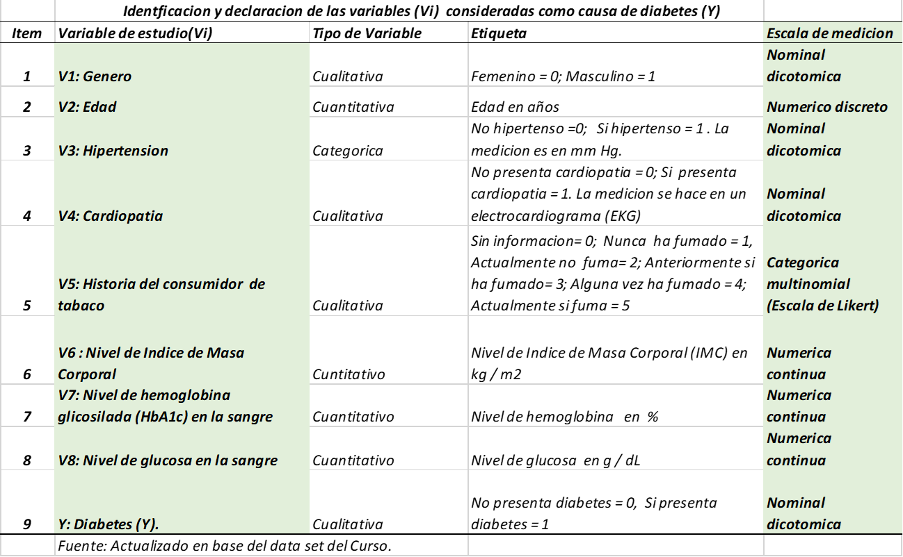

#1.CARGAR LIBRERIAS PARA EL ANALISIS DESCRIPTIVO
library(dplyr)
library(tidyverse)
library(ggplot2)
library(gridExtra)
library(tibble)
#2. Establecer el directorio de trabajo local
getwd() #Consultar el directorio de trabajo actual ## [1] "G:/Mi unidad/REPO/Adelmo/AdemoOchoaNolasco.github.io"setwd("G:/Mi unidad/REPO/Adelmo/AdemoOchoaNolasco.github.io") # Establecer el entorno de trabajo
#3. Cargar datos
data_diabetes<-read.csv('./diabetes_prediction_dataset.csv', encoding = 'UTF-8', sep = ';')
head(data_diabetes)## gender age hypertension heart_disease smoking_history bmi HbA1c_level blood_glucose_level
## 1 Female 80 0 1 never 25.19 6.6 140
## 2 Female 54 0 0 No Info 27.32 6.6 80
## 3 Male 28 0 0 never 27.32 5.7 158
## 4 Female 36 0 0 current 23.45 5.0 155
## 5 Male 76 1 1 current 20.14 4.8 155
## 6 Female 20 0 0 never 27.32 6.6 85
## diabetes
## 1 0
## 2 0
## 3 0
## 4 0
## 5 0
## 6 0str(data_diabetes)## 'data.frame': 100000 obs. of 9 variables:
## $ gender : chr "Female" "Female" "Male" "Female" ...
## $ age : num 80 54 28 36 76 20 44 79 42 32 ...
## $ hypertension : int 0 0 0 0 1 0 0 0 0 0 ...
## $ heart_disease : int 1 0 0 0 1 0 0 0 0 0 ...
## $ smoking_history : chr "never" "No Info" "never" "current" ...
## $ bmi : num 25.2 27.3 27.3 23.4 20.1 ...
## $ HbA1c_level : num 6.6 6.6 5.7 5 4.8 6.6 6.5 5.7 4.8 5 ...
## $ blood_glucose_level: int 140 80 158 155 155 85 200 85 145 100 ...
## $ diabetes : int 0 0 0 0 0 0 1 0 0 0 ...summary(data_diabetes)## gender age hypertension heart_disease smoking_history
## Length:100000 Min. : 0.08 Min. :0.00000 Min. :0.00000 Length:100000
## Class :character 1st Qu.:24.00 1st Qu.:0.00000 1st Qu.:0.00000 Class :character
## Mode :character Median :43.00 Median :0.00000 Median :0.00000 Mode :character
## Mean :41.89 Mean :0.07485 Mean :0.03942
## 3rd Qu.:60.00 3rd Qu.:0.00000 3rd Qu.:0.00000
## Max. :80.00 Max. :1.00000 Max. :1.00000
## bmi HbA1c_level blood_glucose_level diabetes
## Min. :10.01 Min. :3.500 Min. : 80.0 Min. :0.000
## 1st Qu.:23.63 1st Qu.:4.800 1st Qu.:100.0 1st Qu.:0.000
## Median :27.32 Median :5.800 Median :140.0 Median :0.000
## Mean :27.32 Mean :5.528 Mean :138.1 Mean :0.085
## 3rd Qu.:29.58 3rd Qu.:6.200 3rd Qu.:159.0 3rd Qu.:0.000
## Max. :95.69 Max. :9.000 Max. :300.0 Max. :1.000#4. Fitrado - creacion subset de interes
## ADULTO JOVEN 25 A 44 años
## ADULTO MADURO-MEDIO 45 a 59 años
## ADULTO MAYOR 60 a más
diabetes_25_44 <- data_diabetes %>% filter(age >=25) %>% filter(age <=44) %>% mutate(TIPO_ADULTO ="1")
summary(diabetes_25_44)## gender age hypertension heart_disease smoking_history
## Length:26523 Min. :25.00 Min. :0.00000 Min. :0.000000 Length:26523
## Class :character 1st Qu.:30.00 1st Qu.:0.00000 1st Qu.:0.000000 Class :character
## Mode :character Median :35.00 Median :0.00000 Median :0.000000 Mode :character
## Mean :34.68 Mean :0.03148 Mean :0.004675
## 3rd Qu.:40.00 3rd Qu.:0.00000 3rd Qu.:0.000000
## Max. :44.00 Max. :1.00000 Max. :1.000000
## bmi HbA1c_level blood_glucose_level diabetes TIPO_ADULTO
## Min. :10.08 Min. :3.500 Min. : 80.0 Min. :0.00000 Length:26523
## 1st Qu.:25.39 1st Qu.:4.800 1st Qu.:100.0 1st Qu.:0.00000 Class :character
## Median :27.32 Median :5.800 Median :140.0 Median :0.00000 Mode :character
## Mean :28.71 Mean :5.449 Mean :134.9 Mean :0.03589
## 3rd Qu.:30.70 3rd Qu.:6.200 3rd Qu.:158.0 3rd Qu.:0.00000
## Max. :91.82 Max. :9.000 Max. :300.0 Max. :1.00000diabetes_45_59 <- data_diabetes %>% filter(age >=45) %>% filter(age <=59) %>% mutate(TIPO_ADULTO ="2")
summary(diabetes_45_59)## gender age hypertension heart_disease smoking_history
## Length:22537 Min. :45.00 Min. :0.0000 Min. :0.00000 Length:22537
## Class :character 1st Qu.:48.00 1st Qu.:0.0000 1st Qu.:0.00000 Class :character
## Mode :character Median :52.00 Median :0.0000 Median :0.00000 Mode :character
## Mean :51.89 Mean :0.1002 Mean :0.03523
## 3rd Qu.:56.00 3rd Qu.:0.0000 3rd Qu.:0.00000
## Max. :59.00 Max. :1.0000 Max. :1.00000
## bmi HbA1c_level blood_glucose_level diabetes TIPO_ADULTO
## Min. :10.50 Min. :3.500 Min. : 80.0 Min. :0.0000 Length:22537
## 1st Qu.:26.56 1st Qu.:4.800 1st Qu.:100.0 1st Qu.:0.0000 Class :character
## Median :27.32 Median :5.800 Median :140.0 Median :0.0000 Mode :character
## Mean :29.48 Mean :5.574 Mean :139.6 Mean :0.1092
## 3rd Qu.:31.92 3rd Qu.:6.200 3rd Qu.:159.0 3rd Qu.:0.0000
## Max. :88.72 Max. :9.000 Max. :300.0 Max. :1.0000diabetes_60 <- data_diabetes %>% filter(age >=60) %>% mutate(TIPO_ADULTO ="3")
summary(diabetes_60)## gender age hypertension heart_disease smoking_history
## Length:25055 Min. :60.00 Min. :0.0000 Min. :0.0000 Length:25055
## Class :character 1st Qu.:64.00 1st Qu.:0.0000 1st Qu.:0.0000 Class :character
## Mode :character Median :70.00 Median :0.0000 Median :0.0000 Mode :character
## Mean :70.76 Mean :0.1737 Mean :0.1203
## 3rd Qu.:78.00 3rd Qu.:0.0000 3rd Qu.:0.0000
## Max. :80.00 Max. :1.0000 Max. :1.0000
## bmi HbA1c_level blood_glucose_level diabetes TIPO_ADULTO
## Min. :10.01 Min. :3.500 Min. : 80.0 Min. :0.0000 Length:25055
## 1st Qu.:26.04 1st Qu.:4.800 1st Qu.:126.0 1st Qu.:0.0000 Class :character
## Median :27.32 Median :5.800 Median :145.0 Median :0.0000 Mode :character
## Mean :28.55 Mean :5.694 Mean :145.2 Mean :0.1968
## 3rd Qu.:30.47 3rd Qu.:6.500 3rd Qu.:159.0 3rd Qu.:0.0000
## Max. :88.76 Max. :9.000 Max. :300.0 Max. :1.0000diabetes_Grupoadultos <- bind_rows(diabetes_25_44,diabetes_45_59,diabetes_60)
str(diabetes_Grupoadultos)## 'data.frame': 74115 obs. of 10 variables:
## $ gender : chr "Male" "Female" "Female" "Male" ...
## $ age : num 28 36 44 42 32 42 42 37 40 30 ...
## $ hypertension : int 0 0 0 0 0 0 0 0 0 0 ...
## $ heart_disease : int 0 0 0 0 0 0 0 0 0 0 ...
## $ smoking_history : chr "never" "current" "never" "never" ...
## $ bmi : num 27.3 23.4 19.3 33.6 27.3 ...
## $ HbA1c_level : num 5.7 5 6.5 4.8 5 5.7 5.7 3.5 6 6.1 ...
## $ blood_glucose_level: int 158 155 200 145 100 158 80 159 90 126 ...
## $ diabetes : int 0 0 1 0 0 0 0 0 0 0 ...
## $ TIPO_ADULTO : chr "1" "1" "1" "1" ...diabetes_Grupoadultos_SI <-diabetes_Grupoadultos %>% filter(diabetes =="1")
summary(diabetes_Grupoadultos_SI)## gender age hypertension heart_disease smoking_history
## Length:8345 Min. :25.00 Min. :0.0000 Min. :0.0000 Length:8345
## Class :character 1st Qu.:53.00 1st Qu.:0.0000 1st Qu.:0.0000 Class :character
## Mode :character Median :63.00 Median :0.0000 Median :0.0000 Mode :character
## Mean :61.78 Mean :0.2502 Mean :0.1517
## 3rd Qu.:73.00 3rd Qu.:1.0000 3rd Qu.:0.0000
## Max. :80.00 Max. :1.0000 Max. :1.0000
## bmi HbA1c_level blood_glucose_level diabetes TIPO_ADULTO
## Min. :10.98 Min. :5.700 Min. :126.0 Min. :1 Length:8345
## 1st Qu.:27.32 1st Qu.:6.100 1st Qu.:145.0 1st Qu.:1 Class :character
## Median :30.09 Median :6.600 Median :160.0 Median :1 Mode :character
## Mean :32.12 Mean :6.934 Mean :194.1 Mean :1
## 3rd Qu.:36.03 3rd Qu.:7.500 3rd Qu.:240.0 3rd Qu.:1
## Max. :88.72 Max. :9.000 Max. :300.0 Max. :1diabetes_Grupoadultos_NO <-diabetes_Grupoadultos %>% filter(diabetes =="0")
summary(diabetes_Grupoadultos_NO)## gender age hypertension heart_disease smoking_history
## Length:65770 Min. :25.00 Min. :0.00000 Min. :0.00000 Length:65770
## Class :character 1st Qu.:38.00 1st Qu.:0.00000 1st Qu.:0.00000 Class :character
## Mode :character Median :50.00 Median :0.00000 Median :0.00000 Mode :character
## Mean :50.89 Mean :0.08147 Mean :0.04055
## 3rd Qu.:63.00 3rd Qu.:0.00000 3rd Qu.:0.00000
## Max. :80.00 Max. :1.00000 Max. :1.00000
## bmi HbA1c_level blood_glucose_level diabetes TIPO_ADULTO
## Min. :10.01 Min. :3.500 Min. : 80.0 Min. :0 Length:65770
## 1st Qu.:25.69 1st Qu.:4.800 1st Qu.:100.0 1st Qu.:0 Class :character
## Median :27.32 Median :5.800 Median :140.0 Median :0 Mode :character
## Mean :28.48 Mean :5.397 Mean :132.9 Mean :0
## 3rd Qu.:30.29 3rd Qu.:6.200 3rd Qu.:158.0 3rd Qu.:0
## Max. :91.82 Max. :6.600 Max. :200.0 Max. :0########################################################################
##### diabetes_Grupoadultos_NO
########################################################################
## Analizando la variable bmi - Body mass index
# Boxplot.
boxplot(bmi ~ TIPO_ADULTO, data = diabetes_Grupoadultos_NO,
xlab = "Tipo de adultos",
ylab = "Indice de masa corporal (bmi kg/m2)",
main = "Diagrama de cajas del BMI por tipo de adultos - NO DIABETES",
notch = FALSE,
varwidth = TRUE,
col = c("green","red", "blue"),
names = c("Joven (25 a 44 años) ",
"Medio (45 a 60 años)",
"Mayor (mayor a 60 años)"))## Analizando la variable HbA1c_level - Hemoglobina glicosidica
# Boxplot.
boxplot(HbA1c_level ~ TIPO_ADULTO, data = diabetes_Grupoadultos_NO,
xlab = "Tipo de adultos",
ylab = " HbA1c_level (%)",
main = "Diagrama de cajas del HbA1c_level- NO DIABETES",
notch = FALSE,
varwidth = TRUE,
col = c("green","red", "blue"),
names = c("Joven (25 a 44 años) ",
"Medio (45 a 60 años)",
"Mayor (mayor a 60 años)"))## Analizando la variable Glucosa en sangre
# Boxplot.
boxplot(blood_glucose_level ~ TIPO_ADULTO , data = diabetes_Grupoadultos_NO,
xlab = "Tipo de adultos",
ylab = " Glucosa en sangre (mmg/dl)",
main = "Diagrama de cajas del Glucosa en sangre - NO DIABETES",
notch = FALSE,
varwidth = TRUE,
col = c("green","red", "blue"),
names = c("Joven (25 a 44 años) ",
"Medio (45 a 60 años)",
"Mayor (mayor a 60 años)"))